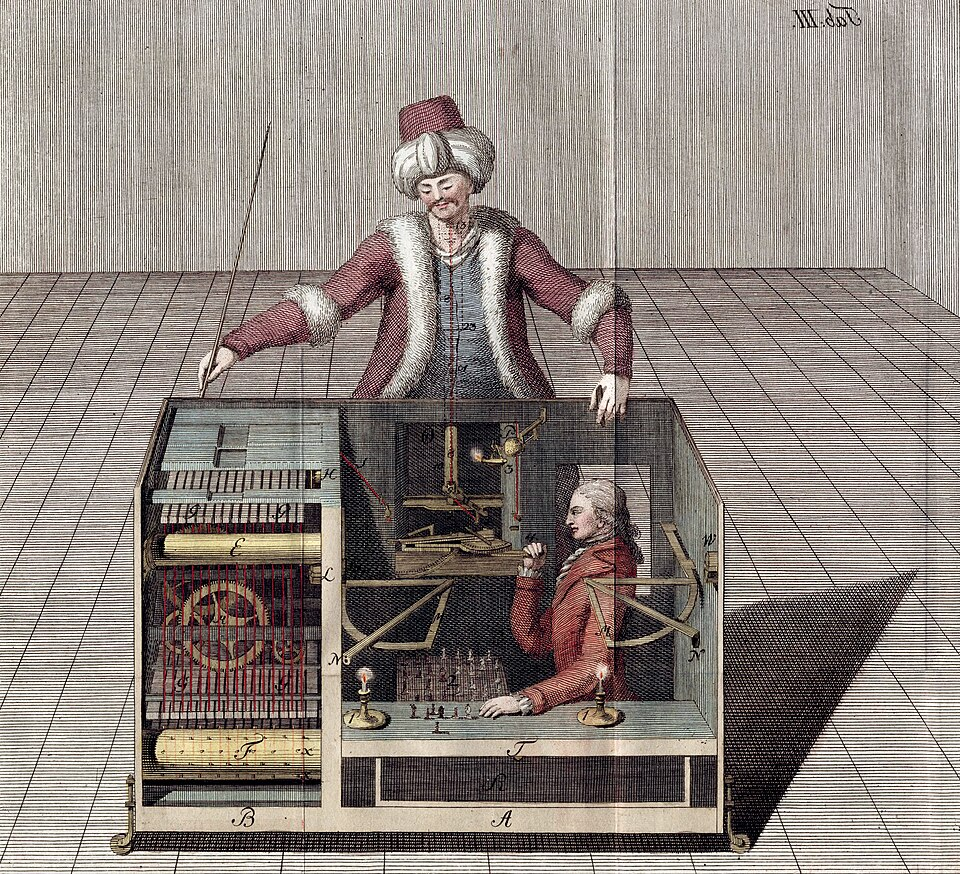

Racknitz, “The Turk” (1789) · Wikimedia
빈의 궁정. 볼프강 폰 켐펠렌이 거대한 나무 상자와 터번을 쓴 인형을 들고 들어옵니다. 인형은 체스를 뒀습니다. 84년 동안 유럽을 순회하며 — 벤저민 프랭클린, 나폴레옹, 에드거 앨런 포를 차례로 만났습니다.
그러나 사람들은 묻기 시작했습니다 — 만약 진짜로 기계가 둔다면? 환상은 사기보다 오래 살아남았습니다.